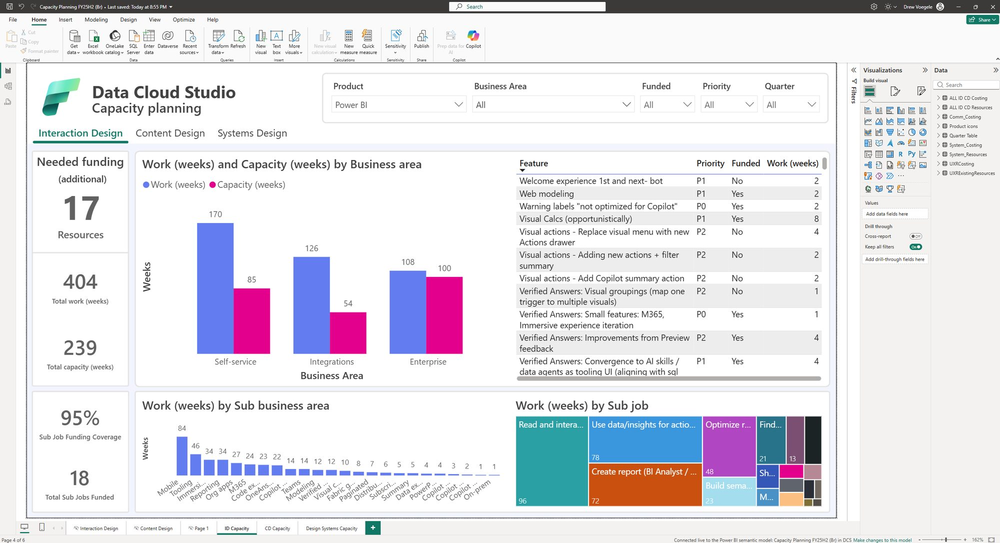

The AI-native studio
Design could only cover half of what engineering planned to ship. Now AI is how the studio works, and design gets into planning earlier with better answers.
The gap
I run the studio on data, starting with capacity. Every semester we plan each feature: its priority, whether design has the budget for it, and the weeks of work against the weeks we have. The plan showed design could only cover half of what engineering planned to ship. AI was the way to close that gap. And as engineering sped up too, it made design more important, not less.


The program
Everyone got four hours of learning time every sprint, plus training, office hours and experiments. Within 30 days of training, 83% of designers were using AI in their daily work, and their confidence rose from 59% to 84%. We treated design as a chain of decisions, not a straight line. Then we gave AI the parts of that chain it does well, starting with writing the words in the product.
- 83%of designers used AI in their daily work within 30 days of training
- 59% → 84%designers' confidence using AI
Nexus and Zero
Nexus turns our design practice into a system. It's a knowledge graph: a connected map of our research, strategy and plans that AI agents can search and reason across. Its skills turn that knowledge into consistent work, with sources cited and standards checked: specs, product text, accessibility, feedback and bug reports. Designers already use it inside product teams' code to ship features in Data Warehouse, Real-Time Intelligence, Data Integration and Microsoft IQ.
What if Figma were already AI-native?
Zero asks: what if Figma were already AI-native? It's an agent-first design environment built on code and connected to GitHub Copilot, so designers collaborate in the product's own code instead of in pixels. It shares Nexus's back-end; Zero is the front-end, where you see what the AI is doing and work on it together.
A critique that changed the product
Every week I spend about 15 minutes using Zero, then hear what the team learned from users. Commenting mixed two metaphors: you entered a comment mode where a click might land on a group instead of the tile you meant, and the comment box covered the work. My critique: select with the normal tool and press New comment in a pane, so the comment targets exactly what you meant. One "Fix with Copilot" per thread, not one for everything. And before it fixes anything, Copilot should say what it understood and plans to change, because comments aren't instructions and threads can contradict each other. The team adopted it: 100% of the vision, 70% of the fidelity so far.
What changed
The biggest change wasn't doing more of the old work. It was getting into planning earlier with better answers: a hypothesis, the evidence for and against it from Nexus, and a working prototype in code, fast enough to shape the plan instead of reacting to it.
Where AI fell short
When our AI got something wrong, it was almost never a hallucination. It was a gap we hadn't filled: no jobs-to-be-done catalog, so it guessed from old decks. We built the catalog and pointed Nexus at it. The gap that remains is taste: AI's first pass rarely looks right, so we teach it with examples and our design system, and a designer still sets the bar.